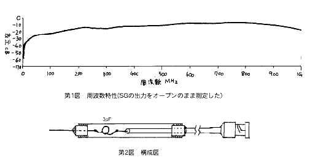

| ・戻る |
スペクトラムアナライザは実に素晴しい測定器です。 例えば50MHzの送信機を作ったとします。そのスペクトラムを画面に「パッ」と写し出して
くれます。 その結果、スプリアスの状態とか寄生振動の状態を一目で見ることが出来ます。
しかしです。
その50MHzの送信機が2ステージで初段である発振段のスペクトラムを見て見たいと考えたときあなたはどうしますか?
スペクトラムアナライザはその入力端子が50Ωになっていますから、発振出力のようにその出力インピーダンスが50Ωから離れたところにある回路につい
ては測定することは出来ないことになります。
「インピーダンスの高いFETプローブのようなものを作ったらどうだろう」と考える方もあるかも知れません。しかし、このFETプローブもいざ 作ると
なると結構難しい物であることがわかってきます。
その結構面倒くさいFETプローブについていろいろと考えていたときのことです。
「もしかしたらコンデンサ一つでもいいのではないか?」
と、考えたのです。
同軸ケーブルの芯線の先端部に3pF程度のコンデンサを取り付けその他端を測定したい場所に当てるのです。
これは実に快適な測定器になりました。 このプローブを使えば発振段のスペクトラムがどうなっているのか一目でわかるようになりました。
ただ、問題が無いという分けにはいきませんでした。 それは測定したレベルが本来の数値に比べてだいぶ低下してしまうということです。 その実測値を第
1図に示します。 この表を見て神経質になってしまう人がいらっしゃるかも知れませんが、#006のRFプローブのことを考えればその実用性を納得してい
ただけると思います。

第2図に構造図を示します。
(1)1.5D2Vの先端にBNCのプラグを取り付けます。 キットでは取り付けたものが用意されています。
(2)1.5D2Vに3X8のスペーサを通します。
(3)1.5D2Vの先端に3pFのコンデンサをハンダ付けします。
(4)3pFのコンデンサの他端に1.6φの真鍮線をハンダ付けします。
(5)シュリンクチューブ(ヒシチューブなど)をコンデンサの部分にかぶせます。
(6)シュリンクチューブをヘアドライや等を使って加熱して収縮させます。
(7)アルミパイプの中に回路を収納します。
(8)先端部の真鍮線にセラミックチューブを通します。
(9)アルミパイプの両端部をエポキシ接着剤で固定します。
(10)エポキシ接着剤が固まってから真鍮線を適当な長さに切り、その先端部を金やすり等でとがらします。
(1)本器をスペクトラムアナライザの入力端子に取り付け、測定したい箇所に先端部を触れることによってその箇所のスペクトラムの概要を知ること
が出来ます。
(2)本器を使用して得られたデータは絶対値としての信用はありません。あくまでも目安ですから誤認しないで下さい。
(3)本器はまた、カウンターの局部測定用のプローブとしても使用することが出来ます。